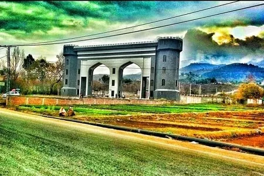

Library & learning
Explore the Central Library and digital resources.
Library information ↗HEC digital library ↗Discover university resources that connect study, research, wellbeing and community.

Rooted in a region known for its extraordinary landscape and cultural heritage, the university experience is about discovery inside and outside the classroom.
Direct links to university resources for learning, support and community.
Explore the Central Library and digital resources.
Library information ↗HEC digital library ↗Connect with the Office of Research, Innovation and Commercialization.
Explore ORIC ↗Read information from University Advancement and the Financial Aid Office.
Student support ↗Use the university’s hostel request and information service.
Hostel information ↗Explore the university’s Directorate of Sports.
Sports information ↗Stay connected through the university’s alumni registration service.
Alumni registration ↗Mountains, rivers and cultural heritage give Swat its distinctive identity — a setting for curiosity and discovery.
About this Swat photograph →